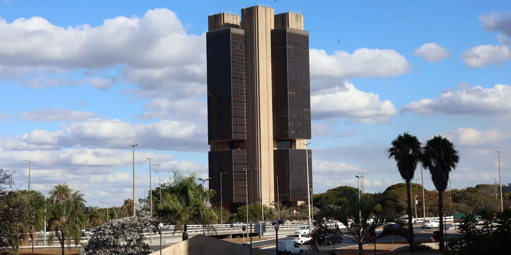

Economista diz que Lula não tem responsabilidade fiscal e herdou superávit em 2022
Alexandre Schwartsman, ex-diretor do Banco Central, critica o aumento de gastos e da dívida; governo afirma que as contas estão sob controle.

O que aconteceu
O economista Alexandre Schwartsman, ex-diretor do Banco Central, afirmou em entrevista ao UOL, repercutida em 6 de novembro de 2026, que o presidente Luiz Inácio Lula da Silva não tem responsabilidade com as contas públicas. Ao comentar a declaração do presidente de que seu histórico prova compromisso fiscal, ele disse: "Se tivesse, não precisaria ficar falando". Segundo Schwartsman, a dívida pública passou de cerca de 72% para mais de 86% do PIB até o fim de 2026, e as despesas federais cresceram cerca de R$ 430 bilhões desde 2022, já descontada a inflação. Ele também avaliou que o governo está despreparado para lidar com o problema. O ponto de partida citado no vídeo é verificável: em 2022, o Governo Central registrou superávit primário de R$ 54,1 bilhões, o primeiro resultado positivo desde 2013, segundo o Tesouro Nacional.
Análise do Corvo
A crítica toca no centro do debate econômico do terceiro mandato: o governo recebeu as contas no azul e ampliou despesas sociais e investimentos, apostando que o crescimento e o aumento de arrecadação sustentariam a trajetória da dívida. Para economistas como Schwartsman, a conta não fecha sem corte de gastos ou reformas, e o risco é pagar com juros altos e menos crescimento. O número que o leitor deve acompanhar é a relação dívida/PIB, que mede se o país consegue honrar o que deve.
Contraponto
Lula rebateu as críticas e disse que ninguém pode falar mais de responsabilidade fiscal do que sua equipe econômica, afirmando que os mais pobres não pagarão a conta do ajuste. O projeto de Orçamento de 2027 prevê superávit primário de R$ 18,6 bilhões. Parte do resultado de 2022 também veio do adiamento de precatórios, ressalva feita pelo próprio Tesouro na época.